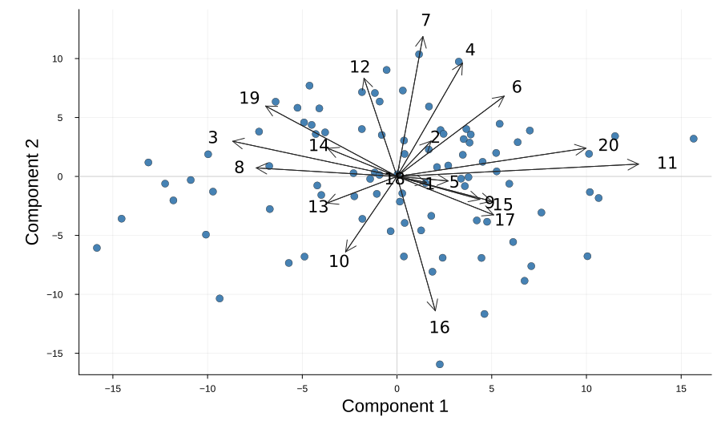
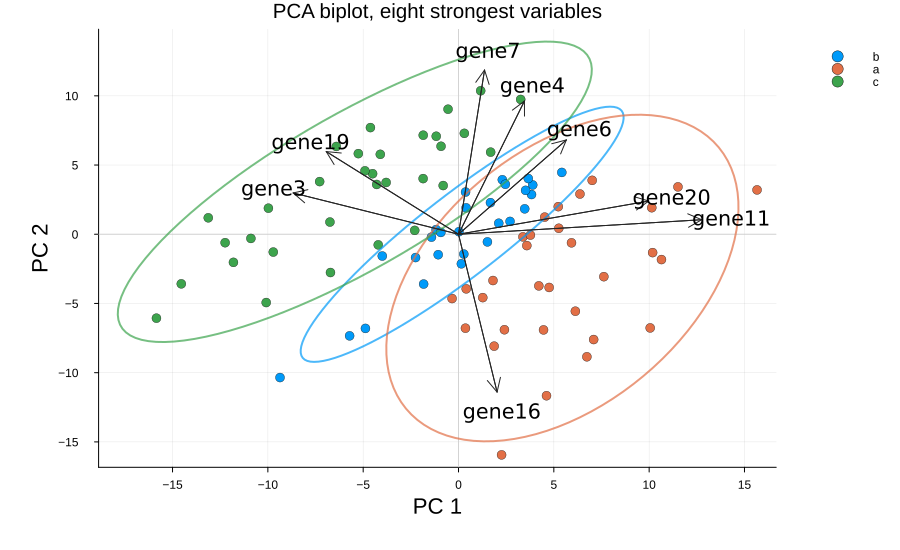
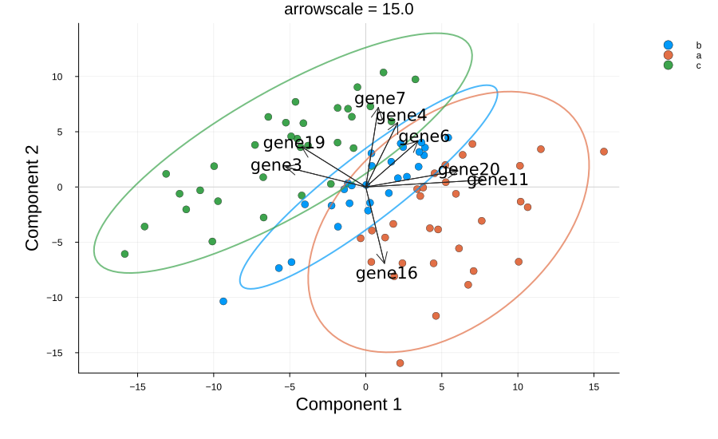
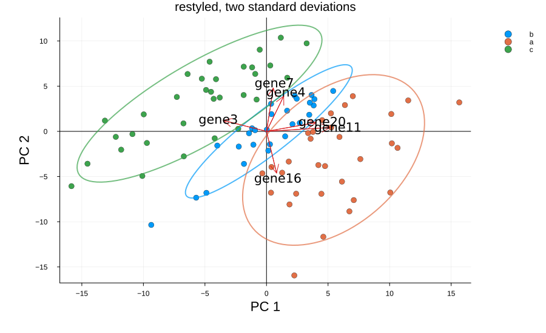

Biplot
The biplot overlays the two previous views. The observations are drawn as points, exactly as in the scores plot, and the variables are drawn as arrows from the origin, their direction and length taken from the loadings. Reading the two together tells us not just that the classes separate, but which variables drive the separation.
plot_biplot(scores, loadings; group = ..., varnames = ..., ntop = ..., arrowscale = ..., kwargs...)It takes a scores matrix (observations in rows) and a loadings matrix (variables in rows), so as with the other two it never sees the model itself.
We use the same simulation as the scores and loadings notebooks, so all three describe one fit.
Setup
using BigRiverEssence
using BigRiverPlots
using Plots
using StableRNGsrng = StableRNG(20240801)
n = 90 # observations
p = 20 # variables
latent = randn(rng, n, 3)
X = latent * randn(rng, 3, p) .+ 0.3 .* randn(rng, n, p)
# the class is read off the first latent signal
y = [latent[i, 1] > 0.4 ? "a" : latent[i, 1] < -0.4 ? "c" : "b" for i in 1:n]
# names for the arrows
vnames = ["gene$(i)" for i in 1:p]
m = pca(X; k = 5)
S = pca_transform(m, X)
size(S), size(m.loadings)((90, 5), (20, 5))The default plot
Given the scores and the loadings, we get the first two components: every observation in one series, and an arrow for every variable, named by index. With twenty variables the arrows crowd the canvas — thinning them is the first thing we usually do.
plot_biplot(S, m.loadings)
Modifying the plot
The arguments that change what we draw are the same family as before — group and comps act on the points, ntop and nonzero on the arrows, varnames names them. The rest are styling: the arrow color and scale, the crosshairs, the class ellipses, and the standard Plots vocabulary.
Grouping, naming, and thinning the arrows
group colors the observations by class and traces an ellipse around each one. ntop keeps only the variables with the largest absolute loading, which is what makes the arrow layer readable — eight is usually plenty. varnames labels those arrows; without it they are named by their index.
Read this figure as two layers at once: the classes separate left to right, and the arrows pointing that way name the variables responsible.
plot_biplot(S, m.loadings;
group = y,
varnames = vnames,
ntop = 8,
xlabel = "PC 1",
ylabel = "PC 2",
title = "PCA biplot, eight strongest variables")
Scaling the arrows
The scores and the loadings live on quite different scales, so the arrows have to be stretched to share a canvas with the points. arrowscale sets that stretch. It carries no statistical meaning — it is chosen so the arrows reach into the cloud without swamping it, and it needs adjusting whenever the data or the number of components changes.
Too small and the arrows huddle at the origin; too large and they run off the axes. Try both to see the range.
plot_biplot(S, m.loadings;
group = y,
varnames = vnames,
ntop = 8,
arrowscale = 15.0,
title = "arrowscale = 15.0")
Colors, ellipses, and the rest
arrowcolor sets the arrows, origincolor the crosshairs at zero. The class ellipses are drawn at nstd standard deviations and can be turned off with ellipse = false — worth doing when the classes overlap heavily and the rings obscure more than they show. A class of fewer than three observations gets no ellipse, since there is nothing to trace.
Everything the plot sets for itself yields to what we pass, so the standard attributes stack on top. The legend sits outside the axes by default, because the arrows reach into every corner where a legend would otherwise sit.
plot_biplot(S, m.loadings;
group = y,
varnames = vnames,
ntop = 6,
arrowscale = 10.0,
arrowcolor = "#d7191c",
origincolor = :black,
nstd = 2.0,
xlabel = "PC 1",
ylabel = "PC 2",
title = "restyled, two standard deviations",
marker = 4,
size = (900, 550))